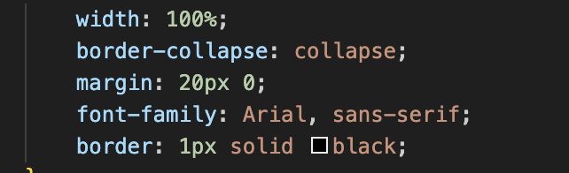
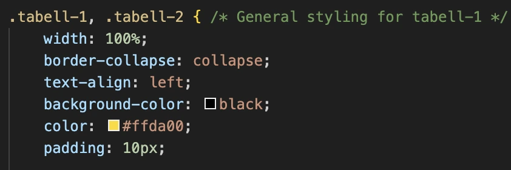
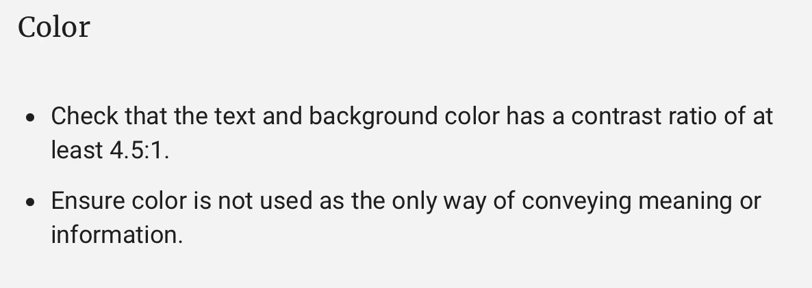
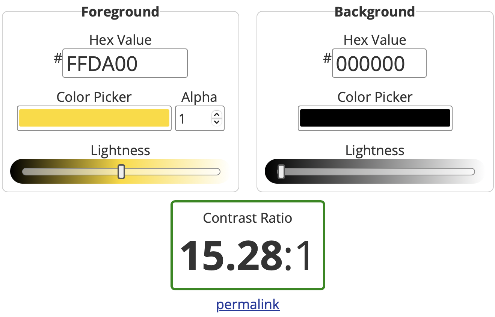
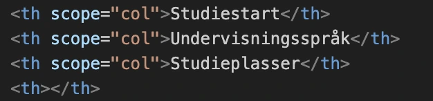
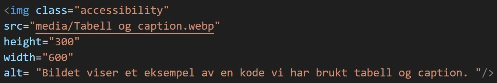
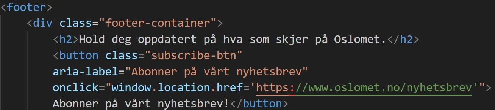

Tilgjengelighet til nettsiden
I Norge er det lovpålagt at universell utforming for nettløsninger skal utføres. (Sannæs, u.å) Når det kommer til å utføre universell utforming av nettsider er det viktig at den er tilgjengelig for alle å bruke. Tilgjengelighet rangerer fra farger man bruker, til skriftstørrelse og design. Dette er for å sikre at andre med diverse funksjonsnedsettelser kan ta til bruk av nettsiden. (GrackleDocs, 2023) Kravet for å utforme en nettside er å følge kriteriene fra WCAG (Web Content Accessibility Guidelines). (Brajnik, 2010)
Bruk av farge og skriftstørrelse
Det gruppa bestemte seg for å gjøre med tanke på farger ville vi beholde OsloMet sin originale farge. Dette er fordi fargene på den originale nettsiden følger tilgjengelighets retningslinjen. (WebAIM, 2024) Linjeavstanden vi har brukt er 1,5 som er standarden, skriftstørrelsen er Arial og San serif, og skriftstørrelsen på nettsiden er størrelse 16 slikt at det skal være lesbart.




Testing av nettsiden
Vi utførte både manuell og automatisk testing for å finne ut om nettsiden vår fulgte WCAG kriteriene. For å utføre den automatiske testingen brukte vi lighthouse, og fikk over 90% som resultater på både mobil og data versjoen av nettsiden. Vi hadde gode resultater på begge testene som viste at nettsiden vår er egnet for andre med funksjonsnedsettelse å bruke. Den manuelle testen vi fulgte var Harvard University sine «Manual Testing for Accessibility». (Harvard University, 2024)
Resultatene av den automatiske testen av data versjonen

Resultatene av den automatiske testen av mobil versjonen

Koder for bedre tilgjengelighet
I indeks-siden har vi valgt å bruke tabeller for å strukturere informasjonen. For å gjøre disse tabellene tilgjengelige for alle brukere, har vi fulgt retningslinjene fra artikkelen HTML table advanced features and accessibility. Vi har inkludert caption-elementer for å gi en kort beskrivelse av tabellenes innhold. Dette er spesielt nyttig for brukere som benytter skjermlesere, da de kan få en rask oversikt uten å måtte lese hver enkelt celle (MDN Web Docs, n.d.-c).

Tabellene er videre strukturert med thead og tbody. Disse elementene bidrar til å organisere tabellen i overskrift, hovedinnhold og fot. Dette gir en semantisk struktur som gjør det lettere for skjermlesere å navigere og tolke tabellen (MDN Web Docs, n.d.-c).

I tillegg har vi brukt attributtet scope på th-elementene. Dette spesifiserer om en tabelloverskrift gjelder for en kolonne, rad eller gruppe. Dette gjør det enklere for skjermlesere å koble data med riktig overskrift (MDN Web Docs, n.d.-c).

For å forbedre tilgjengeligheten ytterligere, har vi inkludert en "skip link" før navigasjonen. Dette gjør det mulig for brukerne å hoppe direkte til hovedinnholdet (World Wide Web Consortium, 2024). Vi har også brukt role="navigation" på nav-elementet for å indikere tydelig for skjermlesere at dette er navigasjonsområdet (MDN Web Docs, n.d.-a).

Alle bilder har fått tilordnet alt-attributter med forklarende tekst for å beskrive innholdet. Dette sikrer at skjermlesere kan lese opp en beskrivelse av bildet for brukere med synshemminger (MDN Web Docs, n.d.-a).

Overskriftene på siden er organisert i et logisk hierarki. Denne strukturen gjør det enkelt for skjermlesere å navigere i innholdet og forstå sidens oppbygning (MDN Web Docs, n.d.-a).
I footer har vi benyttet aria-label på knappen for nyhetsbrevet for å tydeliggjøre funksjonen for skjermlesere (MDN Web Docs, n.d.-b). Vi har også brukt aria-label på ikonene i footer. Dette gir en beskrivelse av lenkene, spesielt når de representeres av logoer. Ettersom logoene også er trykkbare lenker, gjør aria-label at skjermlesere kan identifisere og forklare funksjonen på en god måte (World Wide Web Consortium, 2024).

Referanse
Sannæs, Katrine (U.å) Uiniversell utforming på nett. Ravn Webveveriet. Hentet 21.november, fra https://www.ravn.no/fagprat/universell-utforming-pa-nett.html?gad_source=1&gclid=EAIaIQobChMImMTXkJnoiQMVH2iRBR3E7SO7EAAYAyAAEgKgb_D_BwE
Branjnik, Giorgio & Yesilida, Yeliz & Harper, Simon (25 oktober, 2010) Testability and validity of WCAG 2.0: the expertise effect. ACM Digital Library. 43-50. Hentet 21.november, fra https://doi.org/10.1145/1878803.1878813
GrackleDocs (4 april, 2023) Hvorfor du må følge retningslinjene for tilgjengelig webinnhold (WCAG). GrackleDocs. Hentet 21.november, fra https://www.grackledocs.com/nb/hvorfor-du-ma-folge-retningslinjene-for-tilgjengelighet-av-innhold-pa-nett-wcag/
Harvard University (2024) Manual Testing for Accessibility. The President and Fellows of Harvard College. Hentet 21.november, fra https://accessibility.huit.harvard.edu/manual-testing-accessibility
WebAIM (2024) Contrast Checker. webAIM. Hentet 21.november, fra https://webaim.org/resources/contrastchecker/
World Wide Web Consortium (2024, 13. september) Technique ARIA8: Using aria-label for link purpose. World Wide Web Consortium (W3C). Hentet 22. november 2024, fra https://www.w3.org/WAI/WCAG22/Techniques/aria/ARIA8.html
MDN Web Docs (n.d.-a) HTML: A good basis for accessibility. Mozilla Developer Network. Hentet 22. november 2024, fra https://developer.mozilla.org/en-US/docs/Learn/Accessibility/HTML
MDN Web Docs (n.d.-b) WAI-ARIA basics. Mozilla Developer Network. Hentet 22. november 2024, fra https://developer.mozilla.org/en-US/docs/Learn/Accessibility/WAI-ARIA_basics
MDN Web Docs (n.d.-c) Advanced table features. Mozilla Developer Network. Hentet 22. november 2024, fra https://developer.mozilla.org/en-US/docs/Learn/HTML/Tables/Advanced